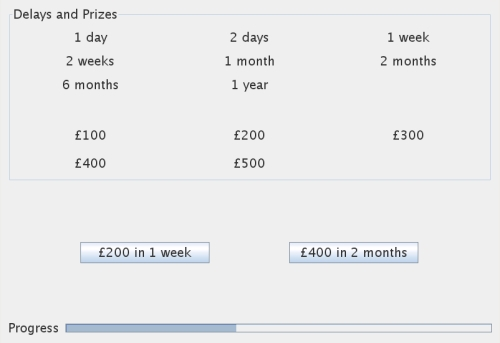

Welcome to this decision making experiment, part of a project in the Cognitive Science Laboratory at Warwick University. This experiment is about how you feel about waiting to receive rewards. We'd like you to make a series of hypothetical choices between delayed rewards. Each choice is quite simple and involves making a choice between a smaller amount of money available now or a larger amount of money available later on. Try to imagine that you are making each choice for real. For example, consider the following choice:
The left option offers £200 in 1 week. If you choose the left option, you'd be credited with £200 in 1 week's time. You wouldn't receive the money before then, but you'd definitely get it after 1 week.
The right option offers £400 in 2 months. If you choose this option, you'd get more money, but you'd have to wait longer to receive it. Which option would you rather have?
We're going to ask you to make a series of choices. Here is an example screen shot from the experiment.

At the top of the screen you can see the delays and prizes on offer throughout the experiment. These are there to give you an idea of what options are available. Each choice will be presented on two buttons in the middle of the screen. Think carefully about the choice and click the button of the option you would prefer to take. The next choice will appear automatically. The progress bar at the bottom of the screen will keep track of how far through the experiment you are.
We will use the choices you make to try to get a better understanding of the psychology of decision making. There are no correct answers and you don't have to do any calculations - we are trying to discover your own gut feelings. We are really interested in each choice you make, so please try carefully to imagine each option and make choices as honestly as you can.
If you are happy to take part, please press "Begin" to get going. The experiment will take about 20 minutes to complete. If you need a break, you are welcome to get up, go for a wonder, and then come back to finish the experiment.